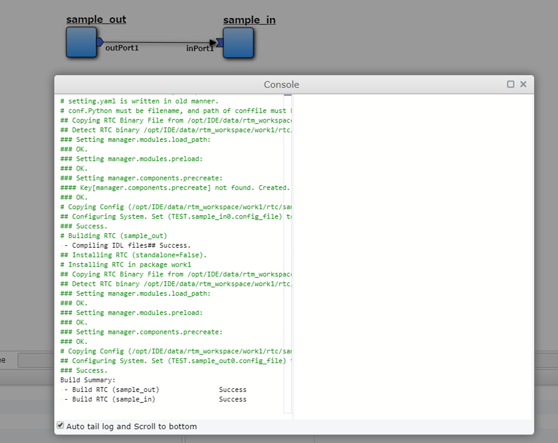
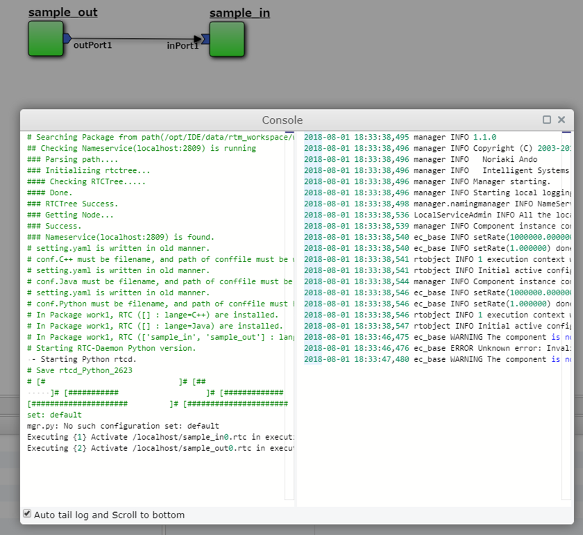
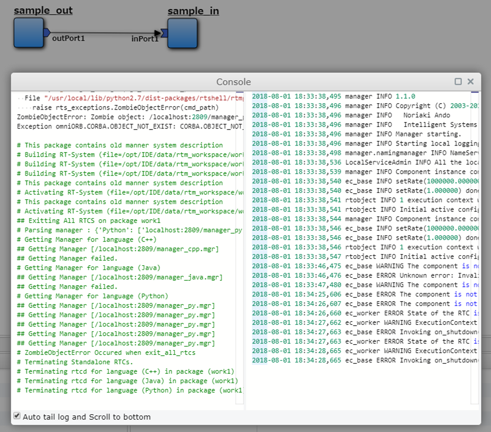
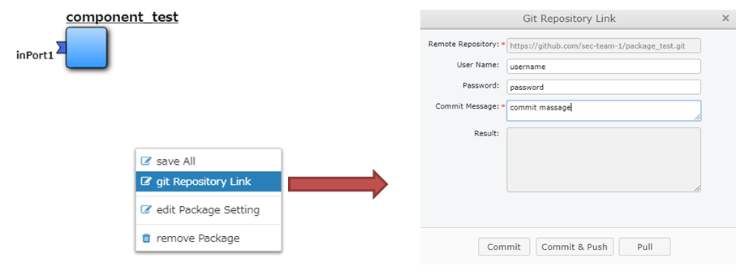

5. AirGraph (RTM Editor)¶
5.1. 概要¶
AirGraph (RTM Editor)の主な機能は次の通りです．
WEBブラウザ上でRTMによるロボットシステム開発が可能
ロボットシステム単位での一覧・再利用が可能
コンポーネント単位での一覧・再利用が可能

画面構成
画面上部：操作メニューエリア
画面左部：システム・コンポーネントの一覧表示エリア
画面右部：システム・コンポーネントのプロパティ設定エリア
画面下部：システムのコンフィギュレーション設定エリア
画面中央：システム構築・コンポーネント開発エリア
5.2. OpenRTM-aistとの関係について¶
OpenRTM-aist では以下の2つの主なツールが提供されています．
RTCBuilder
RTSystemEditor
基本的にはAirGraphと上記ツールには互換性があります．
RTCBuilderにて作成したコンポーネントはAirGraphで表示・編集することが可能です．
AirGraphで作成したコンポーネントをRTCBuilderで表示する場合，以下の修正が必要です．
RTC.xmlのNNInfoタグを削除する
AirGraphで実行中のシステムは，RTSystemEditorで表示することが可能です．
5.3. wasanbonとの関係について¶
AirGraphはパッケージ・コンポーネントの構成管理ツールとして wasanbon を利用しています．
wasanbonを直接操作することで，コンソール上での構築も可能です．
5.4. 使い方¶
5.4.1. パッケージを新規に作成する¶

画面左部の[New]-[New Pkg.]を画面中央にドラッグ＆ドロップします．
パッケージの設定画面が表示されますので，内容を変更し，[Create]ボタンを押下します．
項目名 |
概要 |
|---|---|
Package Name |
パッケージ名 |
Version |
バージョン番号 |
Vender Name |
会社名 |
Abstract |
パッケージ概要 |
Remote Repository |
GitHubなどのリポジトリURL |
画面左部の[Workspace]に新しいパッケージが表示され，画面中央には何もない状態になります．
5.4.2. パッケージを流用して作成する¶

画面左部の[Package]の任意のパッケージを画面中央にドラッグ＆ドロップします．
新規作成時と同様に，パッケージの設定画面が表示されますので，必要な箇所を変更し，[Create]ボタンを押下します．
画面左部の[Workspace]にコピーされたパッケージが表示され，画面中央にはそのパッケージに含まれるコンポーネントが表示されます．
5.4.3. パッケージのプロパティを変更する¶

以下のいずれかの方法でパッケージの設定画面を起動します．
コンポーネントが未選択の状態で，画面下部の[Property]ボタンを押下する（画面右部に表示されます）．
画面上部の[Tools]-[Package Setting]を押下する．
画面中央の白い領域で表示される右クリックメニューの[edit Package Setting]を押下する.
必要な箇所を変更し，[Update]ボタンを押下します．
5.4.4. コンポーネントを新規に作成する¶

画面左部の[New]-[New Comp(C++).]または[New Comp(Python).]を画面中央にドラッグ＆ドロップします．
コンポーネントの設定画面が表示されますので，内容を変更し，[Create]ボタンを押下します．
項目名 |
概要 |
|---|---|
Module Name |
コンポーネント名 |
Module Description |
コンポーネント概要 |
Version |
バージョン番号 |
Vender Name |
会社名 |
Module Category |
コンポーネントカテゴリ |
Component Type |
コンポーネント型 |
Activity Type |
アクティビティ型 |
Component Kind |
コンポーネント種類 |
Max Instance Size |
最大インスタンス数 |
Execution Type |
実行型 |
Execution Rate |
実行周期 |
Abstract |
コンポーネント概要 |
RTC Type |
RTC型 |
DNN Model Name |
DNNモデル名 |
Dataset Name |
データセット名 |
画面中央にコンポーネント名と青いコンポーネントが表示されます．

5.4.6. コンポーネントのプロパティを変更する¶

以下のいずれかの方法でパッケージの設定画面を起動します．
コンポーネントを選択している状態で，画面下部の[Property]ボタンを押下する（画面右部に表示されます）．
コンポーネントの右クリックメニューの[edit Component Setting]を押下する.
必要な箇所を変更し，[Update]ボタンを押下します．
[RTC Activities]タブのチェックボックスを変更すると，該当するメソッドの有効無効が自動反映されます.
主なメソッドは以下の通りです．
メソッド名 |
概要 |
|---|---|
OnInitialize |
初期化される際に一度だけ呼ばれます． |
OnActivated |
非アクティブ状態からアクティブ化されるとき，一度だけ呼ばれます． |
OnExecute |
アクティブ状態時に周期的に呼ばれます． |
OnDeactivated |
アクティブ状態から非アクティブ化されるとき，一度だけ呼ばれます． |
OnAborting |
エラー状態に入る前に一度だけ呼ばれます． |
OnReset |
エラー状態からリセットされ，非アクティブ状態に遷移する際に一度だけ呼ばれます． |
OnError |
エラー状態にいる間，周期的に呼ばれます． |
OnFinalize |
コンポーネントの終了時に一度だけ呼ばれます． |
OnStateUpdate |
OnExecuteの後，毎回呼ばれます． |
OnRateChanged |
実行コンテキストのrateが変更された際に呼ばれます． |
OnStartup |
実行コンテキストが実行を開始する際に一度だけ呼ばれます． |
OnShutdown |
実行コンテキストが実行を停止する際に一度だけ呼ばれます． |
5.4.7. ソースコードを編集する¶

コンポーネントのダブルクリック，またはコンポーネントの右クリックメニューから[edit Source Code]を押下します．
ソースコード編集画面が表示されますので，任意の変更を行います．
Pythonの場合，コンポーネント名.pyがメインのソースコードです．
C++の場合，includeフォルダのコンポーネント名.hとsrcフォルダのコンポーネント名.cppがメインのソースコードです．
変更が終わったら，ソースコード編集画面を終了します．
このタイミングではブラウザ上のみの変更で，サーバ上には変更は反映されていません．
5.4.8. データポートを追加・変更する¶

データポートを追加する場合，コンポーネントの右クリックメニューから[add Input Port]または[add Output Port]を押下します．
変更する場合はポートの右クリックメニューの[edit Port]を押下します．
ポートの設定画面が表示されますので，内容を変更し，[Create]ボタンを押下します．
項目名 |
概要 |
|---|---|
Port Name |
ポート名 |
Data Type |
データ型 |
Variable Name |
変数名 |
変更がサーバに自動反映され，必要なポート定義がソースコードに自動反映されます．
C++の場合
// <rtc-template block="inport_declare">
RTC::TimedLong m_port;
InPort<RTC::TimedLong> m_portIn;
// </rtc-template>
cpp_test::cpp_test(RTC::Manager* manager)
// <rtc-template block="initializer">
: RTC::DataFlowComponentBase(manager),
m_portIn("port", m_port)
// </rtc-template>
{
}
RTC::ReturnCode_t cpp_test::onInitialize()
{
// Set InPort Buffers
addInPort("port", m_portIn);
}
Pythonの場合
def __init__(self, manager):
OpenRTM_aist.DataFlowComponentBase.__init__(self, manager)
self._d_port = RTC.TimedLong(RTC.Time(0,0), 0)
self._portOut = OpenRTM_aist.OutPort("port", self._d_port)
def onInitialize(self):
# Bind variables and configuration variable
# Set InPort buffers
# Set OutPort buffers
self.addOutPort("port", self._portOut)
5.4.9. サービスポートを追加・変更する¶

サービスポートを追加する場合，コンポーネントの右クリックメニューから[add Service Port]を押下します．
変更する場合はポートの右クリックメニューの[edit Port]を押下します．
ポートの設定画面が表示されますので，内容を変更します．
項目名 |
概要 |
|---|---|
Port Name |
ポート名 |
Position |
表示位置 |
サービスポートを利用するためには，インターフェースを定義する必要があるため，画面左下の[Add]ボタンを押下します．
インタフェースが一覧に追加されますので，追加したインタフェースを選択し，画面右側の内容を変更します．
項目名 |
概要 |
|---|---|
Interface Name |
インタフェース名 |
Direction |
方向 |
Instance Name |
インスタンス名 |
Variable Name |
変数名 |
IDL File |
IDLファイル |
Interface Type |
インタフェース型 |
独自型でのインターフェースを実現したい場合，画面下部の[Upload_IDL_File]ボタンを押下し，IDLファイルをアップロードすることが可能です．
アップロードしたIDLファイルは，各コンポーネントのIDLフォルダに配置されます（ソースコードとして編集も可能です）．
変更が完了したら，[Create]ボタンを押下します．
変更がサーバに自動反映され，必要なポート定義などがソースコードに自動反映されます．
C++の場合
// CORBA Port declaration
// <rtc-template block="corbaport_declare">
RTC::CorbaPort m_servicePortPort;
// </rtc-template>
// Service declaration
// <rtc-template block="service_declare">
Img_CameraCaptureServiceSVC_impl m_interface;
// </rtc-template>
cpp_test::cpp_test(RTC::Manager* manager)
// <rtc-template block="initializer">
: RTC::DataFlowComponentBase(manager),
m_servicePortPort("servicePort")
// </rtc-template>
{
}
RTC::ReturnCode_t cpp_test::onInitialize()
{
// Set service provider to Ports
m_servicePortPort.registerProvider("interface", "Img::CameraCaptureService", m_interface);
// Set service consumers to Ports
// Set CORBA Service Ports
addPort(m_servicePortPort);
}
Pythonの場合
def __init__(self, manager):
OpenRTM_aist.DataFlowComponentBase.__init__(self, manager)
self._servicePortPort = OpenRTM_aist.CorbaPort("servicePort")
self._interface = Img_CameraCaptureService_i()
def onInitialize(self):
# Set service providers to Ports
self._servicePortPort.registerProvider("interface", "Img::CameraCaptureService", self._interface)
# Set CORBA Service Ports
self.addPort("self._servicePortPort")
5.4.10. コンフィギュレーションを追加・変更する¶

コンフィギュレーションを追加・変更する場合，コンポーネントの右クリックメニューから[edit Configuration Parameter]を押下します．
コンフィギュレーション設定画面が表示されますので，画面左下の[Add]ボタンを押下します．
コンフィギュレーションが一覧に追加されますので，追加されたコンフィギュレーションを選択し，画面右側の内容を変更します．
項目名 |
概要 |
|---|---|
Name |
パラメタ名 |
Type |
データ型 |
Default Value |
初期値 |
Variable Name |
変数名 |
Unit |
単位 |
Constraint |
制約条件 |
Widget |
Textのみ |
Step |
選択不可 |
変更が完了したら，[Update]ボタンを押下します．
変更がサーバに自動反映され，必要な変数定義などがソースコードに自動反映されます．
C++の場合
// <rtc-template block="config_declare">
/*!
*
* - Name: conf_name0
* - DefaultValue: 0
*/
int m_conf_name0;
// </rtc-template>
RTC::ReturnCode_t cpp_test::onInitialize()
{
// Bind variables and configuration variable
bindParameter("conf_name0", m_conf_name0, "0");
return RTC::RTC_OK;
}
Pythonの場合
def __init__(self, manager):
OpenRTM_aist.DataFlowComponentBase.__init__(self, manager)
# <rtc-template block="init_conf_param">
"""
- Name: conf_name0
- DefaultValue: 0
"""
self._conf_name0 = [0]
# </rtc-template>
def onInitialize(self):
# Bind variables and configuration variable
self.bindParameter("conf_name0", self._conf_name0, "0")
{kind=link}
5.4.12. パッケージ・コンポーネントを保存する¶
以下のいずれかの方法でパッケージおよびコンポーネントの保存を行います．
画面上部の[File]-[Save All]を押下する．
画面中央の白い領域で表示される右クリックメニューの[save All]を押下する.
全ての変更が保存され，コンポーネントの変更内容からパッケージの定義情報が更新されます．
5.4.13. パッケージ・コンポーネントをビルドする¶
{kind=link}
画面上部の[Component]-[Build All]を押下します．
コンソール画面が表示されますので，左側の画面に"Success"と表示されれば成功です．
Pythonの場合，ビルドは不要ですが，実行周期の設定などを更新する必要があるので，システム実行前はビルドしてください．
C++で"Failed"と表示された場合は，ソースコードの再編集を行ってください．
コンソールは自動更新されますので，自動更新を止める場合は，画面下部の[Auto tail and Scroll to bottom]のチェックボックスをOFFにしてください．
5.4.14. システムを実行する¶
{kind=link}
画面上部の[Component]-[Run Package]を押下します．
コンソール画面が表示されますので，左側の画面に"Activate"と表示されれば成功です．
IDEではコンポーネントのプロセス起動からアクティブ化までを一気に行います．
Kill Processなどが表示された場合，何らかのエラーが発生していますので，ソースコードの再編集・再ビルドを行ったください．
Pythonの場合は構文エラーでも実行時に検出されるため，画面右側にエラーなどが表示されている可能性があります．
コンソールは自動更新されますので，自動更新を止める場合は，画面下部の[Auto tail and Scroll to bottom]のチェックボックスをOFFにしてください．
5.4.15. システムを停止する¶
{kind=link}
画面上部の[Component]-[Terminate Package]を押下します．
コンソール画面が表示されますので，左側の画面に"Kill Process"などが表示されれば成功です．
5.4.16. コンポーネントをGitリポジトリと連携する¶
Gitリポジトリと連携する場合，あらかじめgitconfgの設定が必要となります．
はじめてCommitを行う場合には，IDEを実行しているサーバ上でコンソールからgitconfigの設定を行ってください．
$ git config --global user.name "your name"
$ git config --global user.email youremail@example.com

コンポーネントの右クリックメニューから[Git Repository Link]を押下します．
Gitリポジトリ設定画面が表示されますので，ユーザ名などの項目を入力し，[Commit & Push]ボタンを押下します．
Result欄に結果が表示されます．
Git側のリモートリポジトリはIDE上から作成することはできないため，あらかじめGitHub上などで作成してください．
ローカルリポジトリのみに反映する場合には，[Commit]ボタンを押下してください．
~/.netrcなどにユーザ名・パスワードをあらがじめ書いておくことで，ユーザ名・パスワードの入力を省略することが可能です．
5.4.17. パッケージをGitリポジトリと連携する¶
{kind=link}
以下のいずれかの方法でGitリポジトリ設定画面を起動します．
画面上部の[File]-[Git Repository Link]を押下する．
画面中央の白い領域で表示される右クリックメニューの[Git Repository Link]を押下する.
Gitリポジトリ設定画面が表示されますので，ユーザ名などの項目を入力し，[Commit & Push]ボタンを押下します．
Result欄に結果が表示されます．
自動的にパッケージにコンポーネントのリポジトリが紐付けられます．
Git側のリモートリポジトリはIDE上から作成することはできないため，あらかじめGitHub上などで作成してください．
ローカルリポジトリのみに反映する場合には，[Commit]ボタンを押下してください．
~/.netrcなどにユーザ名・パスワードをあらがじめ書いておくことで，ユーザ名・パスワードの入力を省略することが可能です．